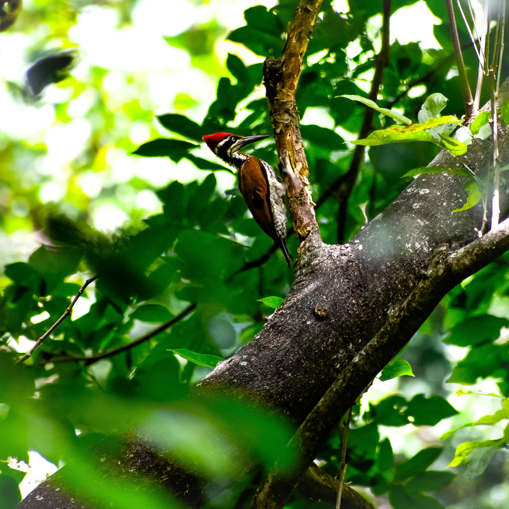

Photo: Ganesh Kulasekara / UnsplashAccelerator Workshop · India 2026
Learn faster with expert guidance.
Receive immediate feedback from experienced mentors who can help you recognize problems, understand why they are happening, and make effective adjustments.